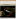
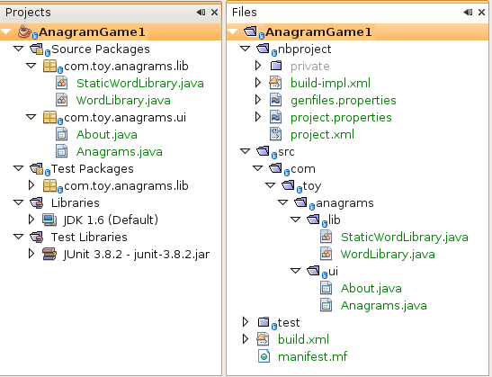
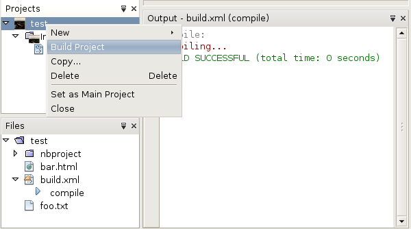
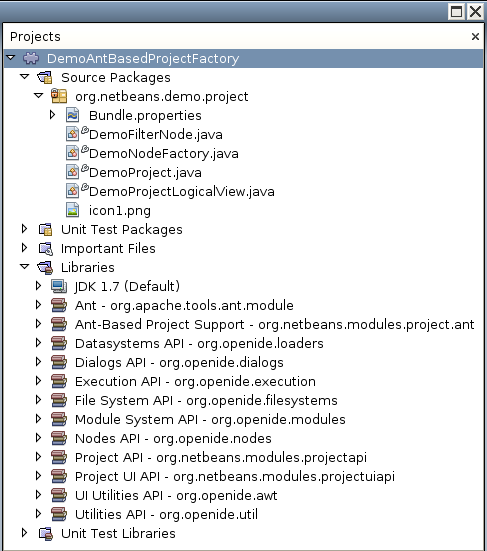
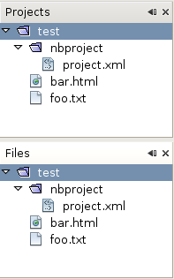
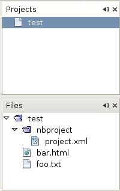
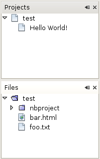
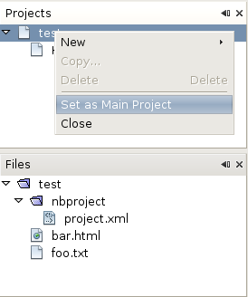
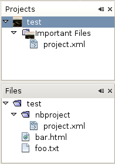

Apache NetBeans
Apache NetBeansLatest release
NetBeans Ant-Based Project Type Module Tutorial
| This tutorial needs a review. You can edit it in GitHub following these contribution guidelines. |
This tutorial demonstrates how to create a new project type for projects that need to use Ant as their build tool.
This tutorial assumes you want to create a project type for projects that need to use Ant as their build tool. If this is not the case, you should use the NetBeans Project Type Module Tutorial instead.
You will also make use of this icon, which you can right-click here and download: 
Optionally, for troubleshooting purposes, you can download the completed sample and inspect the sources.
Introduction to Project Types
A project type is a NetBeans Platform term for a grouping of folders and files that is treated as a single unit. Treating related folders and files as a single unit makes working with them easier for the end user.One way in which a project type simplifies life for the user is that you are able to fill the Projects window only with those folders and files that the end user is most likely to work.
For example, the Java project type in NetBeans IDE helps the end user to work with the folders and files belonging to a single Java application. As you can see below, the folders and files the end user most needs to work with are shown in the Projects window:

In this tutorial, we will create a project type that will look as follows in the Projects window:

Our project type will be defined by specific entries in the project’s project.xml file. The "Build Project" menu item, shown in the screenshot above, will call the "compile" target in the "build.xml" file, both of which are assumed to be present.
The following are the main NetBeans API classes we will be implementing in this tutorial:
| Class | Description |
|---|---|
Represents the project. |
|
Provides the logical view for the project. |
|
Provides supplemental information for the project. |
|
Provides one or more nodes for the logical view. |
|
Provides one or more actions for the project. |
At the end of this tutorial, your module source structure will be as follows:

Creating the Module Project
We begin by working through the New Module Project wizard. At the end of it, we will have a basic source structure, with some default files, that every NetBeans module requires.
-
Choose File > New Project (Ctrl+Shift+N). Under Categories, select NetBeans Modules. Under Projects, select Module. Click Next.
-
In the Name and Location panel, type
DemoProjectTypein the Project Name field. Change the Project Location to any directory on your computer. Leave the Standalone Module option and Set as Main Project checkbox selected. Click Next.
-
In the Basic Module Configuration panel, type
org.netbeans.demo.projectin Code Name Base.
-
Do not select "Generate XML Layer", since our module will not need a
layer.xmlfile. Leave the location of the localizing bundle so that it will be stored in a package with the nameorg/netbeans/demo/project. Click Finish.
The IDE creates the DemoProjectType project. The project contains all of your sources and project metadata, such as the project’s Ant build script. The project opens in the IDE. You can view its logical structure in the Projects window (Ctrl-1) and its file structure in the Files window (Ctrl-2).
Setting Dependencies
We will need to make use of several NetBeans APIs. In this step, we select the modules that provide the NetBeans APIs that we will need.
-
Right-click the project node and choose Properties. The Project Properties dialog box opens.
-
In the Libraries panel, add dependencies on the following modules:
-
Ant
-
Ant-Based Project Support
-
Datasystems API
-
Dialogs API
-
Execution API
-
File System API
-
Module System API
-
Nodes API
-
Project API
-
Project UI API
-
UI Utilities API
-
Utilities API
-
1. Expand the module’s Libraries node in the Projects window and make sure that the list of APIs is as shown in the Libraries node below:
Creating the Project
Next, we implement the org.netbeans.api.project.Project class.
At the end of this section, when you open a folder containing a nbprojects folder that has a project.xml with content as defined below…
<?xml version="1.0" encoding="UTF-8"?>
<project xmlns="https://netbeans.org/ns/project/1">
<type>org.netbeans.demo.project.DemoProject</type>
<configuration>
<data xmlns="https://netbeans.org/ns/demo-project/1">
<name>test</name>
</data>
</configuration>
</project>…all the folders and files will be shown in the Projects window, just like the Files window, as shown below:

In subsequent sections, we’ll filter the display in the Projects window. For now, we’ll simply show everything the project provides.
Do the following:
-
Create a Java class called
DemoProject.
-
Change the default code to the following. Notice that we begin with an annotation that registers the project as applying to projects that have a
project.xmlas defined above.
@AntBasedProjectRegistration(type = "org.netbeans.demo.project.DemoProject",
iconResource = "org/netbeans/demo/project/icon1.png",
sharedName = "data",
sharedNamespace = "https://netbeans.org/ns/demo-project/1",
privateName = "project-private",
privateNamespace = "https://netbeans.org/ns/demo-project-private/1")
public class DemoProject implements Project {
final AntProjectHelper helper;
public DemoProject(AntProjectHelper helper) {
this.helper = helper;
}
@Override
public Lookup getLookup() {
return Lookups.fixed(new Object[]{
new Info()
});
}
@Override
public FileObject getProjectDirectory() {
return helper.getProjectDirectory();
}
private final class Info implements ProjectInformation {
@Override
public String getName() {
return helper.getProjectDirectory().getName();
}
public String getDisplayName() {
return getName();
}
@Override
public Icon getIcon() {
return new ImageIcon(ImageUtilities.loadImage(
"org/netbeans/demo/project/icon1.png"));
}
@Override
public void addPropertyChangeListener(PropertyChangeListener pcl) {
}
@Override
public void removePropertyChangeListener(PropertyChangeListener pcl) {
}
@Override
public Project getProject() {
return DemoProject.this;
}
}
}Creating the Logical View Provider
Next, we implement the org.netbeans.spi.project.ui.LogicalViewProvider class.
Once we have implemented the LogicalViewProvider , we’ll have filtered out everything from the Projects window, other than the project node.

Once we have achieved the above, we’ll begin registering nodes in the project’s lookup. In doing so, we’ll let the project display nodes that supplement the project node in the Projects window.
Do the following:
-
Create a Java class called
DemoProjectLogicalView.
-
Change the default code to the following:
class DemoProjectLogicalView implements LogicalViewProvider {
private final DemoProject project;
public DemoProjectLogicalView(DemoProject project) {
this.project = project;
}
@Override
public org.openide.nodes.Node createLogicalView() {
return new RootNode(project);
}
private static final class RootNode extends AbstractNode {
public static final String DEMO_PROJECT_ICON_PATH =
"org/netbeans/demo/project/icon1.png";
public static final String REGISTERED_NODE_LOCATION =
"Projects/org-netbeans-demo-project-DemoProject/Nodes";
final DemoProject project;
public RootNode(DemoProject project) {
super(NodeFactorySupport.createCompositeChildren(project, REGISTERED_NODE_LOCATION), Lookups.singleton(project));
this.project = project;
setIconBaseWithExtension(DEMO_PROJECT_ICON_PATH);
}
@Override
public Action[] getActions(boolean arg0) {
Action[] nodeActions = new Action[7];
nodeActions[0] = CommonProjectActions.newFileAction();
//The 'null' is a reference to no properties being used, in this case.
nodeActions[1] = ProjectSensitiveActions.projectCommandAction(ActionProvider.COMMAND_BUILD, "Build Project", null);
nodeActions[2] = CommonProjectActions.copyProjectAction();
nodeActions[3] = CommonProjectActions.deleteProjectAction();
nodeActions[5] = CommonProjectActions.setAsMainProjectAction();
nodeActions[6] = CommonProjectActions.closeProjectAction();
return nodeActions;
}
@Override
public Image getIcon(int type) {
return ImageUtilities.loadImage(DEMO_PROJECT_ICON_PATH);
}
@Override
public Image getOpenedIcon(int type) {
return getIcon(type);
}
@Override
public String getDisplayName() {
return project.getProjectDirectory().getName();
}
}
@Override
public Node findPath(Node root, Object target) {
//leave unimplemented for now
return null;
}
}-
In the
DemoProject, register the logical view provider that you created above. Register the logical view provider in theDemoProjectlookup, as shown in the line in below by:
@Override
public Lookup getLookup() {
return Lookups.fixed(new Object[]{
new Info(),
*new DemoProjectLogicalView(this),*
});
}-
Run the project and you should see that only the project node is shown in the Projects window:
-
Let’s now begin registering nodes for our logical view. In our logical view, we defined a constant named REGISTERED_NODE_LOCATION. That constant points to the place in the System Filesystem where the logical view will look for its nodes.
Create a new class called DemoNodeFactory and define it as follows:
@NodeFactory.Registration(projectType="org-netbeans-demo-project-DemoProject", position=200)
public class DemoNodeFactory implements NodeFactory {
public DemoNodeFactory() {
}
@Override
public NodeList createNodes(Project proj) {
try {
AbstractNode nd = new AbstractNode(Children.LEAF);
nd.setDisplayName("Hello World!");
return NodeFactorySupport.fixedNodeList(nd);
} catch (DataObjectNotFoundException ex) {
Exceptions.printStackTrace(ex);
}
return NodeFactorySupport.fixedNodeList();
}
}Install the module again and you should see your dummy node:

-
Finally, let’s enable some of the menu items on the project node. Do so by adding the project to the lookup of the
RootNode. TheRootNodeis defined inDemoProjectand should be supplemented by the addition shown in bold below:
public RootNode(DemoProject project) {
super(NodeFactorySupport.createCompositeChildren
(project, REGISTERED_NODE_LOCATION), *Lookups.singleton(project)*);
this.project = project;
setIconBaseWithExtension(DEMO_PROJECT_ICON_PATH);
}-
Install the module again and you should see the following, i.e., various menu items are now functioning on the project node:

In the next section, we will add a real node to the logical view in the Projects window.
Creating the Nodes
Next, we work some more with the org.netbeans.spi.project.ui.support.NodeFactory class and we extend the org.openide.nodes.FilterNode .
At the end of this section, when you open a folder containing a project.xml file as specified above, all the folders and files will be shown in the Projects window, just like the Files window, as shown below:

In subsequent sections, we’ll filter the display in the Projects window. For now, we’ll simply show everything the project provides.
Do the following:
-
Replace
DemoNodeFactorywith the following:
@NodeFactory.Registration(projectType="org-netbeans-demo-project-DemoProject", position=200)
public class DemoNodeFactory implements NodeFactory {
public DemoNodeFactory() {
}
@Override
public NodeList createNodes(Project proj) {
try {
DemoFilterNode nd = new DemoFilterNode(proj);
return NodeFactorySupport.fixedNodeList(nd);
} catch (DataObjectNotFoundException ex) {
Exceptions.printStackTrace(ex);
}
return NodeFactorySupport.fixedNodeList();
}
}-
Next, we look for the "nbproject" folder in our application and create a
FilterNodefor that folder, so we can display it in the logical view of the project.
Create a new class called DemoFilterNode and define it as follows:
public class DemoFilterNode extends FilterNode {
private static Image smallImage =
ImageUtilities.loadImage("org/netbeans/demo/project/icon1.png"); // NOI18N
public DemoFilterNode(Project proj) throws DataObjectNotFoundException {
super(DataObject.find(proj.getProjectDirectory().getFileObject("nbproject")).getNodeDelegate());
}
@Override
public String getDisplayName() {
return "Important Files";
}
//Next, we add icons, for the default state, which is
//closed, and the opened state; we will make them the same.
//Icons in project logical views are
//based on combinations--you must combine the node's own icon
//with a distinguishing badge that is merged with it. Here we
//first obtain the icon from a data folder, then we add our
//badge to it by merging it via a NetBeans API utility method:
@Override
public Image getIcon(int type) {
DataFolder root = DataFolder.findFolder(FileUtil.getConfigRoot());
Image original = root.getNodeDelegate().getIcon(type);
return ImageUtilities.mergeImages(original, smallImage, 7, 7);
}
@Override
public Image getOpenedIcon(int type) {
DataFolder root = DataFolder.findFolder(FileUtil.getConfigRoot());
Image original = root.getNodeDelegate().getIcon(type);
return ImageUtilities.mergeImages(original, smallImage, 7, 7);
}
}-
Install the module again and you should see the "nbproject" folder presented in the Projects window, with the label and icons defined above:
Integrating the Ant Build Tool
Finally, we add a new menu item to the project’s contextual menu. We then hook that menu item to the "compile" target in the project’s build.xml file, which we’ll assume is in the application’s root directory.
Do the following:
-
First, add an
ActionProviderimplementation to the project’s lookup, as shown below. Note that included in theDemoActionProvideris the Build command:
@AntBasedProjectRegistration(type = "org.netbeans.demo.project.DemoProject",
iconResource = "org/netbeans/demo/project/icon1.png",
sharedName = "data",
sharedNamespace = "https://netbeans.org/ns/demo-project/1",
privateName = "project-private",
privateNamespace = "https://netbeans.org/ns/demo-project-private/1")
public class DemoProject implements Project {
final AntProjectHelper helper;
public DemoProject(AntProjectHelper helper) {
this.helper = helper;
}
@Override
public Lookup getLookup() {
return Lookups.fixed(new Object[]{
new Info(),
new DemoProjectLogicalView(this),
new DemoActionProvider(),
});
}
@Override
public FileObject getProjectDirectory() {
return helper.getProjectDirectory();
}
private final class Info implements ProjectInformation {
@Override
public String getName() {
return helper.getProjectDirectory().getName();
}
public String getDisplayName() {
return getName();
}
@Override
public Icon getIcon() {
return new ImageIcon(ImageUtilities.loadImage(
"org/netbeans/demo/project/icon1.png"));
}
@Override
public void addPropertyChangeListener(PropertyChangeListener pcl) {
}
@Override
public void removePropertyChangeListener(PropertyChangeListener pcl) {
}
@Override
public Project getProject() {
return DemoProject.this;
}
}
private final class DemoActionProvider implements ActionProvider {
private String[] supported = new String[]{
ActionProvider.COMMAND_DELETE,
ActionProvider.COMMAND_COPY,
ActionProvider.COMMAND_BUILD,};
@Override
public String[] getSupportedActions() {
return supported;
}
@Override
public void invokeAction(String string, Lookup lookup) throws IllegalArgumentException {
if (string.equals(ActionProvider.COMMAND_DELETE)) {
DefaultProjectOperations.performDefaultDeleteOperation(DemoProject.this);
}
if (string.equals(ActionProvider.COMMAND_COPY)) {
DefaultProjectOperations.performDefaultCopyOperation(DemoProject.this);
}
//Here we find the Ant script and call the target we need!
if (string.equals(ActionProvider.COMMAND_BUILD)) {
try {
FileObject buildImpl = helper.getProjectDirectory().getFileObject("build.xml");
ActionUtils.runTarget(buildImpl, new String[]{"compile"}, null);
} catch (IOException ex) {
Exceptions.printStackTrace(ex);
}
}
}
@Override
public boolean isActionEnabled(String command, Lookup lookup) throws IllegalArgumentException {
if command.equals(ActionProvider.COMMAND_DELETE) {
return true;
} else if command.equals(ActionProvider.COMMAND_COPY) {
return true;
} else if command.equals(ActionProvider.COMMAND_BUILD) {
return true;
} else {
throw new IllegalArgumentException(command);
}
}
}
}-
Next, let’s add the Build command to the logical view. In
DemProjectLogicalView, rewritegetActionsas follows:
@Override
public Action[] getActions(boolean arg0) {
Action[] nodeActions = new Action[7];
nodeActions[0] = CommonProjectActions.newFileAction();
//The 'null' indicates that the default icon will be used:
nodeActions[1] = ProjectSensitiveActions.projectCommandAction(ActionProvider.COMMAND_BUILD, "Build Project", null);
nodeActions[2] = CommonProjectActions.copyProjectAction();
nodeActions[3] = CommonProjectActions.deleteProjectAction();
nodeActions[5] = CommonProjectActions.setAsMainProjectAction();
nodeActions[6] = CommonProjectActions.closeProjectAction();
return nodeActions;
}Installing the Module
Finally, we install the module and make use of the result.
-
Check that the module looks as follows in the Projects window:
-
Right-click the module project and choose "Run". The application for which the module is being created starts up and the module installs into it.
1.
Choose File | Open Project and browse to a folder that has a subfolder named "nbprojects" containing a project.xml with this content:
<?xml version="1.0" encoding="UTF-8"?>
<project xmlns="https://netbeans.org/ns/project/1">
<type>org.netbeans.demo.project.DemoProject</type>
<configuration>
<data xmlns="https://netbeans.org/ns/demo-project/1">
<name>test</name>
</data>
</configuration>
</project>The root directory of the project should have a build.xml file with content such as the following:
<?xml version="1.0" encoding="UTF-8"?>
<project name="" default="default" basedir=".">
<target name="compile">
<echo>Compiling...</echo>
</target>
</project>-
Open the project and you should see the Projects window displaying the project’s "nbprojects" folder. Right-click the project node and notice the project-level menu items that you defined earlier. Right-click the "Build Project" command and you should be able to build the project.
Next Steps
For more information about creating and developing NetBeans modules, see the following resources: